- Home
- Online Delivery
- About
- Brands
- Corporate
- For Investors
- Investor Contacts
- Shareholding Pattern
- Annual General Meeting
- Annual Report
- Financial Results
- Conference Call Transcripts
- Unclaimed Dividend
- Presentation
- Postal Ballot
- Policies
- Press Releases
- Corporate Governance Report
- Reconciliation of Share Capital Audit Report
- Statement of Investor Complaints
- Filing With The Stock Exchanges
- Notice of Board Meeting
- Newspaper AD - Notice of Board Meeting
- Outcome of the Board Meeting
- Composition of the Board & Committees
- Compliance under Regulation 46
- Newspaper Advt. - Financial Results
- Details of Familiarization Programme imparted to Independent Directors
- Speciality Gift Vouchers
- Food Blog
- Contact Us
-
Press News
-
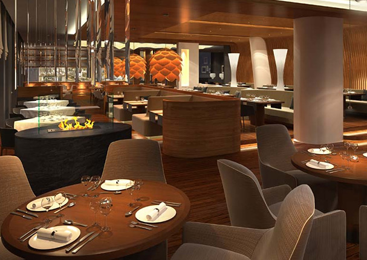
Sweet Bengal: New confectionery store by Speciality Restaurants
Updated : (9th January, 2017)Source : India Info Line – IIFL
-
Cultural Dining In Kolkata: Top 10 Restaurants & Eateries
Updated : (9th February, 2017)Source : Culture Trip
-
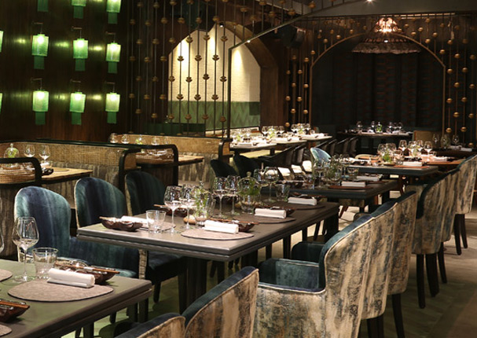
POH
Updated : (5th March, 2017)Source : The Economic Times
-
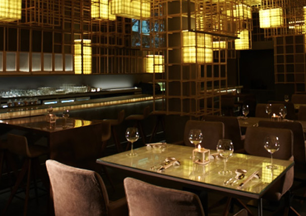
Pune's New Asian Restaurant: Gong
Updated : (5th April, 2017)Source : Vogue India
-
How This Restaurateur Changed The Helm Of Food Service Game In India: Anjan Chatterjee
Updated : (27th Feb, 2018)Source : Restaurant India
-
Mainland China, South City, Kolkata
Updated : (23rd March, 2018)Source : 23.The Telegraph
-
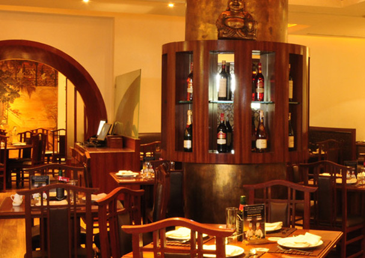
Five Best Chinese Restaurants in Kolkata: Mainland China
Updated : (11th March, 2018)Source : Outlook India, Kolkata
-
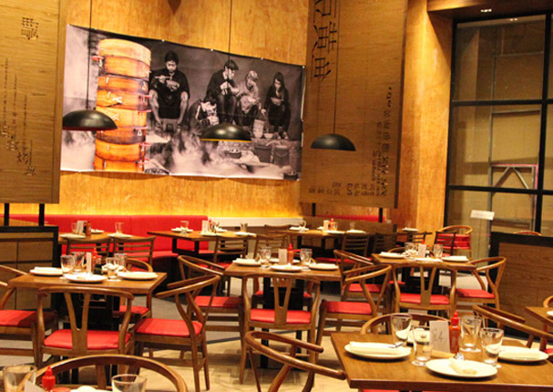
Palate Pleasing Pleasures: Asia Kitchen by Mainland China
Updated : (16th March, 2018)Source : Verve Magazine
-
IPL Season: Mainland China, Oh! Calcutta, Sigree Global Grill, Hoppipola
Updated : (7th April, 2018)Source : The Grey Alley, Bangalore
-
Chef Rajesh Dubey
Source : Explocity.com
-
Taking a tasty 'wok' through China: Mainland China
Updated : (5th May, 2018)Source : The New Indian Express
-
Mainland China, Noida
Updated : (9th May, 2018)Source : Magicpin, Delhi-NCR
-
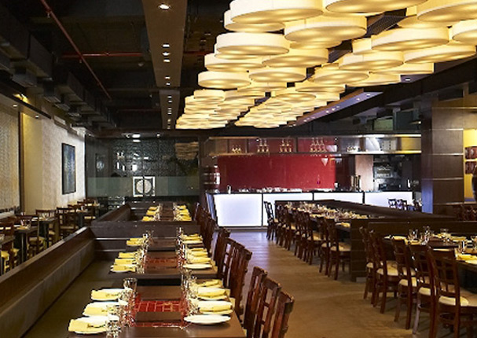
Taste The Flavours of Punjab: Sigree Global Grill
Updated : (10th January, 2019)Source : Unkrate India
-
Harvest Festival in Bangalore
Updated : (12th January, 2019)Source : Little Black Book
-
Sigree Global Grill, Bengaluru
Updated : (18th January, 2019)Source : Explocity
-
A day in the life of restaurateur Avik Chatterjee
Updated : (21st January, 2019)Source : Mumbai Foodie
- 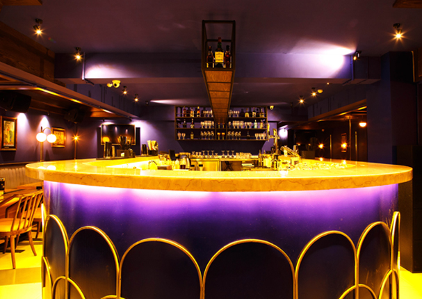
New Funky Bar in Begumpet - HAY
Updated : (8th May, 2019)Source : Little Black Book, Hyderabad
- 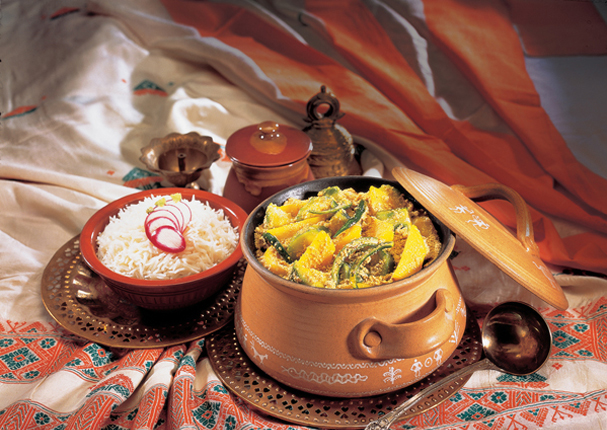
Bengali Food at its best – Oh! Calcutta
Updated : (2nd June, 2019)Source : StreetByte, Hyderabad
- 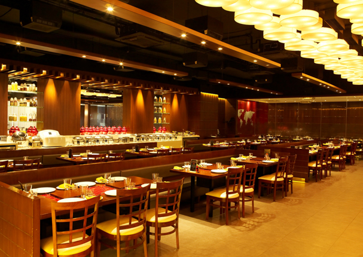
Eid Special Buffet – Sigree Global Grill
Updated : (5th June, 2019)Source : Trinity Mirror, Chennai
- 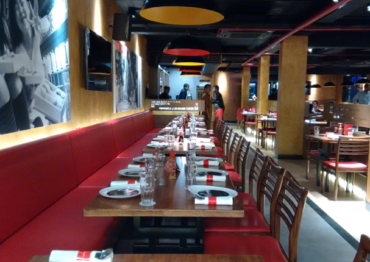
Asia Kitchen, Chennai
Updated : (7th June, 2019)Source : Andhra Jyothy, Chennai
- 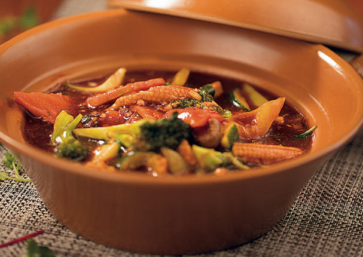
Clay Pot Festival, Asia Kitchen Chennai
Updated : (10th June, 2019)Source : News Today
- 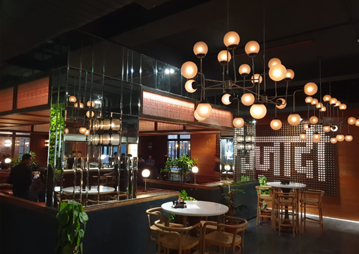
Episode One, Kolkata
Updated : (14th June, 2019)Source : T2, The Telegraph
- 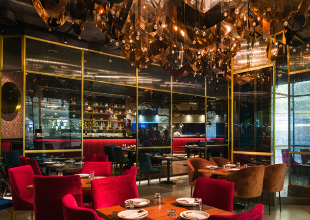
Riyasat, Kolkata
Updated : (18th June, 2019)Source : T2, The Telegraph
-
Clay Pot Festival, Asia Kitchen Chennai
Updated : (18th June, 2019)Source : NDTV Food
- 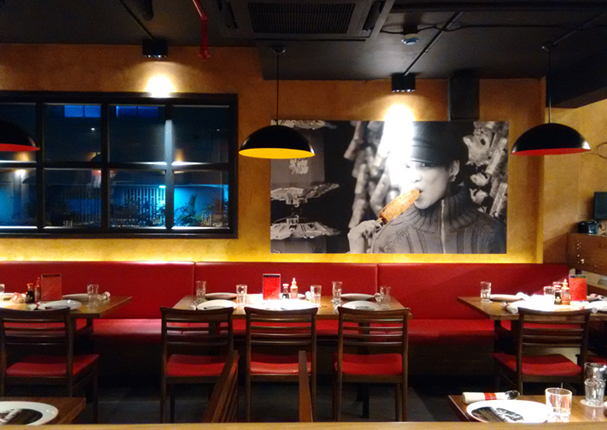
Clay Pot Festival, Asia Kitchen Chennai
Updated : (22nd June, 2019)Source : Hindu Tamil Thilsa